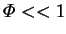

Unfortunately, the one-dimensional assumption violates the no-slip condition
at the cylinder walls if
 (Lee, C. Y. & Wilke 1954).
(Lee, C. Y. & Wilke 1954).
C. Y. Lee and Wilke (1954) suggested that the flow would be
unidirectional with a parabolic profile, as for fully developed pressure-driven
flow (§7.5.1). This assumption was adopted by
Heinzelmann, Wasan & Wilke (1965) and S. S. Rao and Bennett (1966)
in their attempts to establish whether  and Sh varied radially.
and Sh varied radially.
While the velocity profile is probably parabolic for much of the length of the tube if  (Markham & Rosenberger 1980; §3.2.3), this procedure is somewhat problematic. If the velocity field is regarded as given, the species equation (2.53) can be solved independently, but the problem is overconstrained. The vapour mass fraction is known or assumed at both ends of the tube, but the normal component of the vapour mass fraction gradient there can be calculated from the transpiration boundary condition (2.59). The species equation is second order in each spatial direction, including the axial direction of the tube, but four boundary conditions have been imposed on the vapour mass fraction. If no boundary conditions at the mouth were assumed, the problem would not be overconstrained but it would be ill-posed. The species equation is elliptic and therefore its solution would not depend continuously on the given value of the function and its normal gradient at the liquid interface (Courant & Hilbert 1962, pp. 216, 227; Garabedian 1964, p. 484). An arbitrarily small variation in the given data would change the solution greatly. Such data only lead to correctly set problems for hyperbolic equations (Hadamard 1952, pp. 37-9). While ill-posed problems are not necessarily devoid of physical meaning (Courant & Hilbert 1962, pp. 230-1; see the papers in the collection edited by Hämmerlin & Hoffmann 1983 for counterexamples), this is the case for the present problem. The physical interpretation is simple: it would be impossible to simultaneously fix both the velocity and the vapour mass fraction at the interface; even if a gas-vapour mixture from a source of known composition were injected through a surface, the composition at the interface would be affected by diffusion. In conclusion, though the transpiration condition relates the normal component of velocity and the normal component of the gradient of the mass fraction field, it must be regarded as a boundary condition on the velocity if the vapour mass fraction is independently known, e.g. by the requirement of thermodynamic equilibrium with the neighbouring condensed phase. The interfacial velocity must be determined as part of the solution.
Whitaker (1967) attempted to dispel the entire problem by asserting that `the traditional no-slip condition is not valid for that motion occurring because of concentration gradients'. S. S. Rao and Bennett (1967) countered this by citing independent experimental evidence that slip only occurs in diffusion-induced flows at lower pressures and in smaller tubes than those relevant to the Stefan diffusion tube (or the present project). Wasan (1967) responded to Whitaker by stating that the assumption of no-slip did indeed violate the conservation of species but that the flow rate in the tube was almost identical for the two extreme cases of plug and parabolic flow profiles. Wasan's first contention is incorrect: the no-slip condition is only inconsistent with the conservation of species and a finite mass transfer rate if the gas is assumed to be stationary; a simple assumption, but one with no physical basis.
The effect of the no-slip condition in the Stefan diffusion tube was later studied in more detail by Meyer and Kostin (1975), Markham and Rosenberger (1980), and Greenwell, Markham and Rosenberger (1981), as reviewed in §§3.2.2 - 3.2.4.